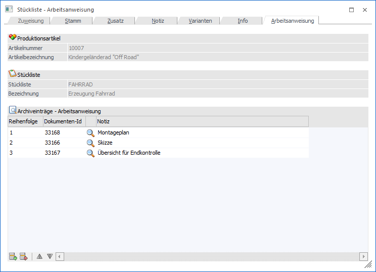
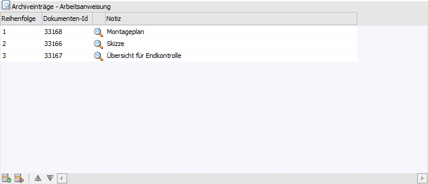
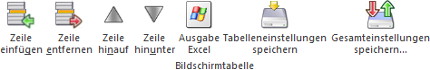

In dem Register "Arbeitsanweisung" können einzelne Archivdokumente zu einer Arbeitsanweisung zusammengefasst werden (ein Drucken ist über das Programm Arbeitsschein möglich).
Achtung
Es können grafische Dateien (z.B. jpg oder gif) als auch Adobe PDF Dokumente hinzugefügt werden und im Arbeitsschein mitangedruckt werden.

Folgende Eingabefelder, Einstellungen und Information stehen zur Verfügung:
Produktionsartikel

Ø Artikelnummer
An dieser Stelle wird die Artikelnummer des ausgewählten Produktionsartikels angezeigt.
Ø Bezeichnung
Hier wird die Bezeichnung des aktuell gewählten Produktionsartikels dargestellt.
Stückliste

Ø Stückliste
An dieser Stelle wird die Nummer der ausgewählten Stückliste angezeigt.
Ø Bezeichnung
Hier wird die Bezeichnung der aktuell gewählten Stückliste dargestellt.
Tabelle "Archiveinträge - Arbeitsanweisung"

In der Tabelle können beliebig viele Archivdokumente hinzugefügt werden, wobei folgende Felder bearbeitet werden können:
Ø Reihenfolge
In diesem Feld kann die Reihenfolge der Dokumente für den Druck bestimmt werden. Eine Umsortierung kann auch via Drag & Drop durchgeführt werden.
Hinweis
Wenn mehrere Archivdokumente die gleiche Reihenfolge aufweisen, so ist die optische Reihenfolge für die Druckreihenfolge ausschlaggebend.
Ø Dokumenten-ID
Über dieses Feld wird die Verknüpfung zu den Archivdokumenten geschaffen. Um Archivdokumenten der Stückliste als Arbeitsanweisung zuzuordnen gibt es mehrere Möglichkeiten:
ü Manuelle Eingabe
Die
Dokumenten-ID ist bekannt (Archiv-Suche) und wird manuell eingegeben. Wird eine
ungültige ID oder eine ID eingegeben, die kein darstellbares Format beinhaltet,
erhält man eine Fehlermeldung.
ü Archiveintrag suchen
Es wird
eine Archiv-Suche durchgeführt und das gefundene Objekt wird mittels Drag &
Drop aus dem Archiv-Suchen-Resultat in die Tabelle gezogen.
ü Neuer Eintrag
Es kann per Drag
& Drop eine neue Arbeitsanweisung (z.B. eine Skizze, welche in Form einer
jpg-Datei vorliegt) direkt aus Windows in die Tabelle gezogen werden.
Dadurch
wird das Fenster "neuer Archiveintrag" geöffnet, in welchem die Beschlagwortung
des neuen Eintrages stattfindet. Wird der neue Archiveintrag ordnungsgemäß
abgespeichert, dann steht dieser automatisch in der Tabelle der
Arbeitsanweisungen.
Ø Icon
Durch einen Doppelklick auf das Symbol erhält man die Archivvorschau.
Ø Notiz
Zu jedem Eintrag eine kurze Beschreibung erfasst werden (50 Zeichen). Diese Beschreibung wird, neben dem Archiveintrag selber, ebenfalls angedruckt.
Tabellenbuttons

Ø Zeile einfügen
Durch Anklicken dieses Buttons kann oberhalb der aktiven Arbeitsanweisung eine weitere Arbeitsanweisung eingefügt werden.
Ø Zeile entfernen
Durch Anklicken dieses Buttons wird die aktive Arbeitsanweisung gelöscht.
Ø Zeile hinauf / Zeile hinunter
Mit Hilfe dieser Buttons können die Arbeitsanweisungen optisch verschoben werden.
Ø Ausgabe Excel
Durch Anwahl des Buttons "Ausgabe Excel" wird der Inhalt der Tabelle an Microsoft Excel übergeben.
Ø Tabelleneinstellungen speichern
Die Spalten einer Tabelle können grundsätzlich an beliebige Positionen verschoben, bzw. in der Breite entsprechend angepasst werden. Durch Anwahl des Buttons "Tabelleneinstellungen speichern" werden die Einstellungen benutzerspezifisch gespeichert und bei dem nächsten Aufruf des Programmpunktes wieder vorgeschlagen.
Ø Gesamteinstellungen speichern…
Im Gegensatz zu "Tabelleneinstellungen speichern" können mit "Gesamteinstellungen speichern" mehrere Tabellenaufbauten gespeichert und nach Wunsch geladen werden. Zusätzlich werden Sonderfunktionen der Tabelle (z.B. "Spalte gruppieren") ebenfalls bei der Speicherung bedacht.